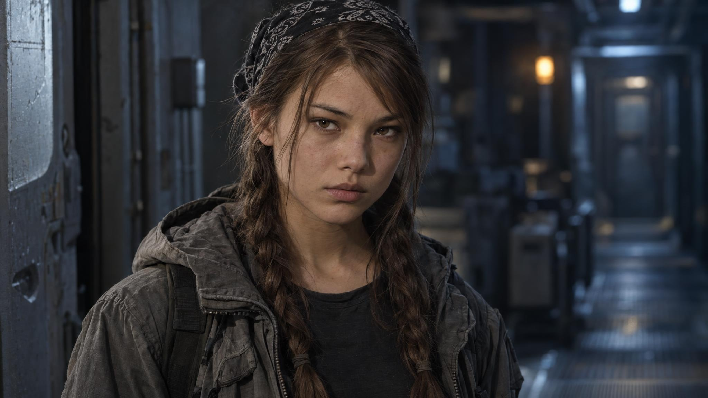
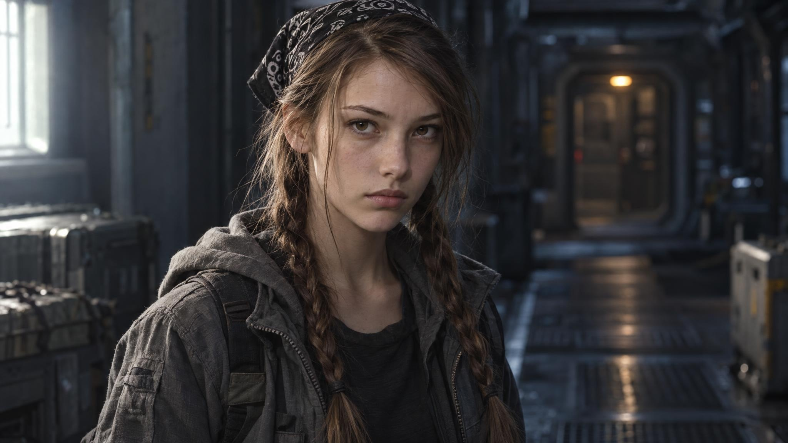

ALIVE
Таис. Девять типажей.
GPT Image 2.5 Sunburst
Узкое угловатое лицо
Компактное округлое лицо
Широкая челюсть
Сердцевидное лицо
Овальное лицо
Ромбовидное лицо
Широкий мягкий овал

Трапециевидное лицо

Прямоугольное лицо